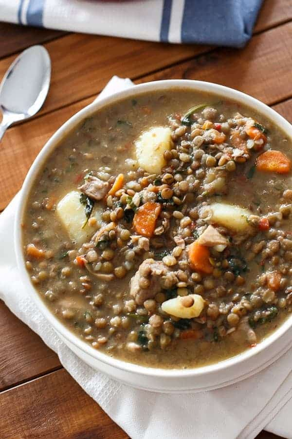

Protein Slop

Description
Protein slop is a basic stew-type recipe. It consists of rice, lentils, and chicken, along with basic seasonings such as salt and a spice mixture of choice. It is an easy to prepare, easy to cook, one-pot dish high in protein.
If you want to use other legumes with the dish, they must either be prepared before hand (with appropriate soaking and boiling) or else taken from a can. Lentils have the advantage of not requiring a soak or pre-cook before use.
This dish can make use of any seasoning mixture, but African seasonings, such as Ethiopean Beriberi (RIP Ethiopia), or Ras El Hanout, work particularly well.
Ingredients
- 0.25 - 1.0 cups rice (any variety)
- 0.25 - 0.5 cups lentil
- 1 chicken breast
- Approx. 1 cup vegetable broth
- 1/2 tsp salt
- 1 tsp seasoning mixture of choice (African varieties work well)
Steps
- Add rice, lentil, salt, and spices to your pot.
- Cut the chicken breast into thin slices and add the chicken to the pot.
- Add about 1 cup of broth to the pot.
- Put the lid on the pot and set the heat to high.
- Once the mixture begins to boil, set heat to low.
- Check on the pot occasionally, stirring the contents and adding water to the dish as needed, as the rice and legumes cook.
- Once rice and lentil appear fully cooked, the dish is finished. Add or boil off water in order to achieve your desired thickness. It is recommended you test the doneness of the rice and lentil by sampling the contents. Before doing this, cut open one of the chicken pieces to ensure they have been fully cooked.
- Eat directly out of the pot for maximum efficiency. Place the hot dish on an oven mit or folded kitchen towel to protect whatever surface you will be eating off of.